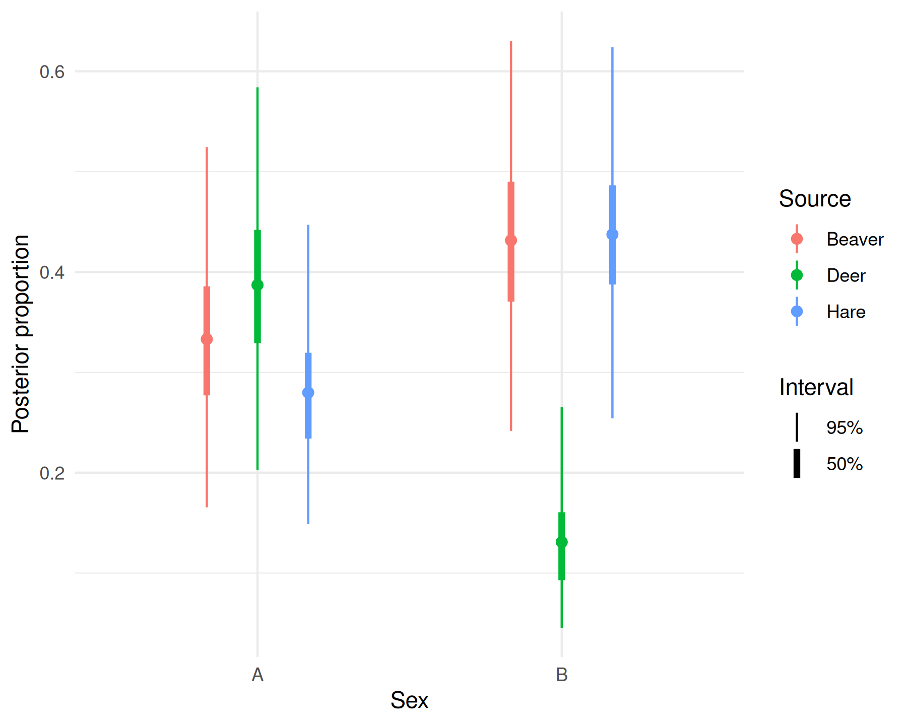
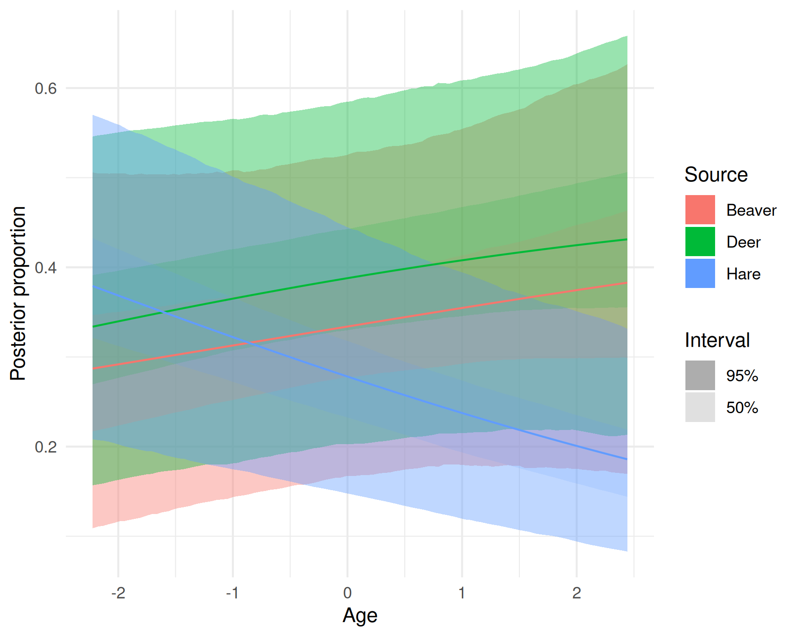
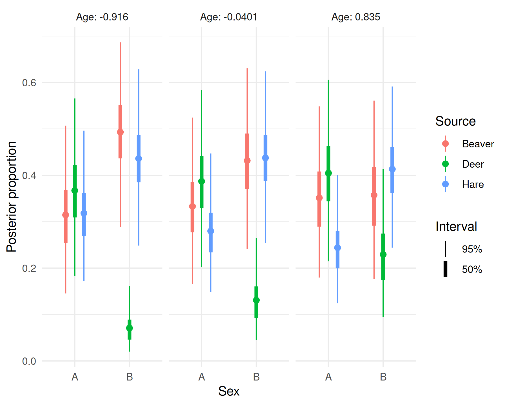
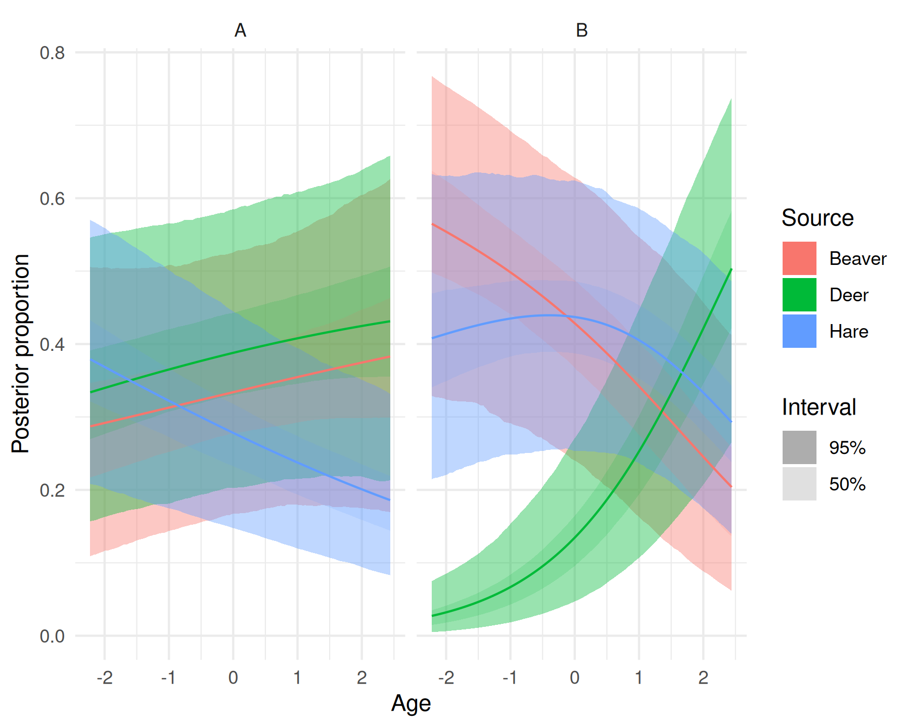
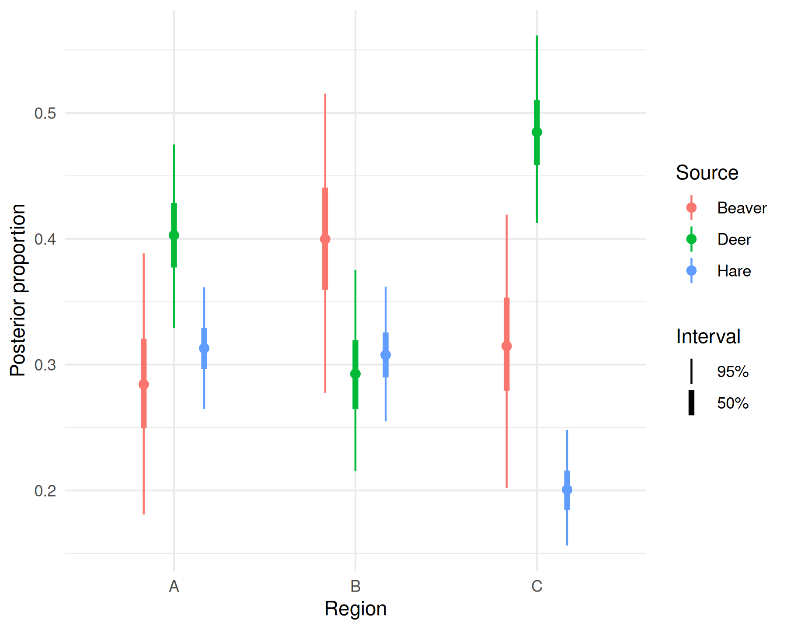
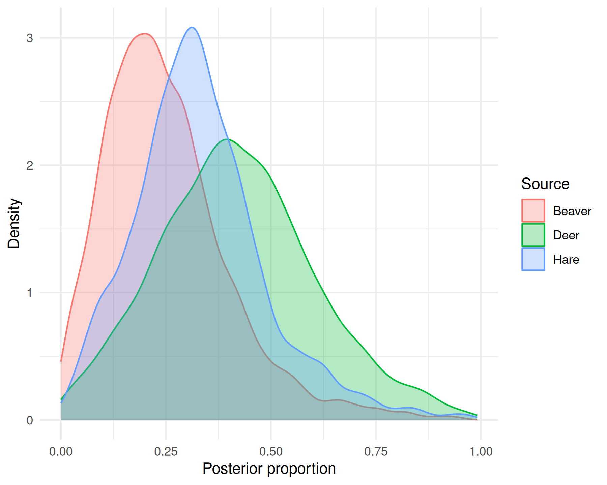

Modelling covariate effects
Mattia Ghilardi
2026-10-02
Source:vignettes/covariates.Rmd
covariates.RmdOverview
vignette("getting-started")
and vignette("data-error")
fit bsimms models with an intercept-only
(~1) formula. With no covariates, p_{i, k} in Equation (1) of vignette("data-error") is the
same for every sample i: a single,
population-average value, p_global, drawn from a Dirichlet
distribution. This vignette covers formula itself: an
lme4-style specification of mixture-level covariates,
spanning fixed effects (continuous, factor, interaction) and
crossed/nested random effects, that instead let p_{i, k} vary across samples.
Covariate effects are added, in isometric log-ratio (ILR)
coordinates, as deviations from this p_global baseline.
p_global is first forward-transformed into ILR coordinates,
then combined with the covariate terms and mapped back onto the source
simplex:
\begin{aligned} \eta_{\text{global}} &= \mathrm{ilr}(p_{\text{global}}), \\ \eta_i &= \eta_{\text{global}} + \mathbf{x}_i^\top \boldsymbol{\beta} + \mathbf{z}_i^\top \mathbf{b}_{g(i)}, \\ p_i &= \mathrm{ilr}^{-1}(\eta_i). \end{aligned}
where \eta_i and \eta_{\text{global}} are each vectors of
D =
K - 1 ILR coordinates, with \eta_{\text{global}} playing the role of the
intercept in this per-dimension linear model since neither \mathbf{x}_i (sample i’s row of fixed-effect covariates) nor \boldsymbol{\beta} include an intercept term
of their own; \mathbf{z}_i and \mathbf{b}_{g(i)} are the analogous
random-effect design row and group-level deviation for the group g(i) sample i belongs to (one such term per grouping
factor, when formula has more than one); and \mathrm{ilr}^{-1} maps \eta_i back onto the source simplex, giving
p_i, a vector of K source proportions – the p_{i, k} used in Equation (1) of vignette("data-error").
Fixed and random effects
Here we simulate a factor fixed effect (Sex), a
continuous fixed effect (Age), their interaction, and a
random intercept (Region, 3 levels):
library(bsimms)
sim_cov <- simulate_bsimms_data(
~ Sex * Age + (1 | Region),
n_mixture_obs = 60,
source_names = c("Beaver", "Deer", "Hare"),
isotope_names = c("d13C", "d15N"),
n_levels = list(Sex = 2),
n_groups = list(Region = 3),
seed = 1
)
fit_full <- bsimm(
sim_cov$formula,
mixture_data = sim_cov$mixture_data,
source_data = sim_cov$source_data,
tdf_data = sim_cov$tdf_data,
isotope_names = sim_cov$isotope_names,
source_means_sds = sim_cov$source_means_sds,
tdf_means_sds = sim_cov$tdf_means_sds,
conc_dep = sim_cov$conc_dep,
error_structure = sim_cov$error_structure,
source_col = sim_cov$source_col,
cores = 4,
seed = 1
)summary() now also reports fixed-effect coefficients
(ILR-scale deviations from p_global) and group-level
standard deviations:
summary(fit_full)
#> Bayesian stable isotope mixing model
#> formula: ~Sex * Age + (1 | Region)
#>
#> Population-average source proportions:
#> source mean sd q2.5 q97.5 rhat ess_bulk ess_tail
#> Beaver 0.334 0.089 0.168 0.525 1.003 1608 1766
#> Deer 0.388 0.094 0.203 0.585 1.002 1554 1706
#> Hare 0.278 0.074 0.148 0.445 1.001 1585 1657
#>
#> Fixed effects (ILR scale, deviations from the global proportions):
#> coefficient ilr_dim mean sd q2.5 q97.5 rhat ess_bulk ess_tail
#> SexB 1 0.972 0.240 0.538 1.458 1.001 2692 2313
#> Age 1 0.006 0.107 -0.198 0.217 1.002 2627 2544
#> SexB:Age 1 -0.644 0.169 -0.970 -0.320 1.001 2915 2312
#> SexB 2 -0.730 0.118 -0.972 -0.506 1.001 2142 2498
#> Age 2 0.179 0.063 0.057 0.300 1.001 2686 2556
#> SexB:Age 2 0.054 0.106 -0.147 0.268 1.001 1936 2122
#>
#> Group-level standard deviations (ILR scale):
#> group term ilr_dim mean sd q2.5 q97.5 rhat ess_bulk ess_tail
#> Region (Intercept) 1 0.572 0.377 0.139 1.559 1.001 1303 2251
#> Region (Intercept) 2 0.511 0.295 0.155 1.294 1.003 1672 1602
#>
#> Error term(s):
#> isotope mean sd q2.5 q97.5 rhat ess_bulk ess_tail
#> d13C 2.927 0.947 1.467 5.188 1.001 1957 2144
#> d15N 1.906 0.560 1.018 3.189 1.001 2508 2712Nested and crossed random effects
Nested random effects (e.g. sampling sites within regions) use
lme4’s / shorthand:
(1 | Region/Site) expands to
(1 | Region) + (1 | Site:Region), giving one random
intercept per Region and a further one per
Region-Site combination. Crossed random
effects, where the grouping factors have no parent/child relationship
(e.g. (1 | Sex:Region)), use : the same way,
without the implied nesting.
chains/iter_warmup/iter_sampling
are reduced below purely to keep this demonstration fast.
sim_nested <- simulate_bsimms_data(
~ (1 | Region / Site),
n_mixture_obs = 60,
source_names = c("Beaver", "Deer", "Hare"),
isotope_names = c("d13C", "d15N"),
n_groups = list(Region = 3, Site = 6),
seed = 1
)
fit_nested <- bsimm(
sim_nested$formula,
mixture_data = sim_nested$mixture_data,
source_data = sim_nested$source_data,
tdf_data = sim_nested$tdf_data,
isotope_names = sim_nested$isotope_names,
source_means_sds = sim_nested$source_means_sds,
tdf_means_sds = sim_nested$tdf_means_sds,
conc_dep = sim_nested$conc_dep,
error_structure = sim_nested$error_structure,
source_col = sim_nested$source_col,
chains = 2,
iter_warmup = 500,
iter_sampling = 500,
seed = 1
)summary() now reports a separate group-level SD for
Region and for Site:Region – each region’s own
baseline deviation, and each site’s further deviation within its region.
n_groups$Site’s total (6) is split across
Region’s levels the same way n_mixture_obs is
split across a factor’s levels elsewhere, here 2 sites per region:
summary(fit_nested)
#> Bayesian stable isotope mixing model
#> formula: ~(1 | Region/Site)
#>
#> Population-average source proportions:
#> source mean sd q2.5 q97.5 rhat ess_bulk ess_tail
#> Beaver 0.409 0.129 0.173 0.679 1.002 439 513
#> Deer 0.401 0.094 0.210 0.595 1.004 559 506
#> Hare 0.190 0.080 0.043 0.355 1.003 401 390
#>
#> Group-level standard deviations (ILR scale):
#> group term ilr_dim mean sd q2.5 q97.5 rhat ess_bulk
#> Site:Region (Intercept) 1 0.250 0.205 0.010 0.795 1.005 414
#> Site:Region (Intercept) 2 0.284 0.294 0.009 1.110 1.000 493
#> Region (Intercept) 1 0.568 0.396 0.054 1.612 1.004 432
#> Region (Intercept) 2 0.449 0.437 0.008 1.568 1.006 449
#> ess_tail
#> 651
#> 542
#> 353
#> 386
#>
#> Error term(s):
#> isotope mean sd q2.5 q97.5 rhat ess_bulk ess_tail
#> d13C 1.725 0.584 0.827 2.994 0.999 780 713
#> d15N 2.737 0.812 1.404 4.513 0.999 866 642Model comparison
To check whether fit_full’s covariates
(Sex, Age, and Region), taken
together, are worth including, fit the same data with the null
(intercept-only) model and compare with loo_compare():
fit_null_cov <- bsimm(
~1,
mixture_data = sim_cov$mixture_data,
source_data = sim_cov$source_data,
tdf_data = sim_cov$tdf_data,
isotope_names = sim_cov$isotope_names,
source_means_sds = sim_cov$source_means_sds,
tdf_means_sds = sim_cov$tdf_means_sds,
conc_dep = sim_cov$conc_dep,
error_structure = sim_cov$error_structure,
source_col = sim_cov$source_col,
cores = 4,
seed = 1
)
loo::loo_compare(fit_full, fit_null_cov)
#> Computing "loo" for model "fit_full" (not cached; use `add_criterion()` to
#> cache it for reuse).
#> Warning: Some Pareto k diagnostic values are too high. See help('pareto-k-diagnostic') for details.
#> Computing "loo" for model "fit_null_cov" (not cached; use `add_criterion()` to
#> cache it for reuse).
#> model elpd_diff se_diff p_worse diag_diff diag_elpd
#> fit_full 0.0 0.0 NA 1 k_psis > 0.7
#> fit_null_cov -67.5 5.7 1.00 N < 100
#>
#> Diagnostic flags present.
#> See ?`loo-glossary` (sections `diag_diff` and `diag_elpd`)
#> or https://mc-stan.org/loo/reference/loo-glossary.html.The best-fitting model is listed first (elpd_diff = 0);
a positive, several-times-larger-than-its-SE elpd_diff for
the runner-up would indicate a real difference in predictive fit.
Bayesian R2
With covariates that create real across-sample variation,
rstantools::bayes_R2() is now informative (unlike the
intercept-only case in vignette("getting-started"),
where it is always ~0):
rstantools::bayes_R2(fit_full)
#> isotope mean sd q2.5 q97.5
#> 1 d13C 0.1817435 0.05915232 0.07122544 0.2945961
#> 2 d15N 0.8929466 0.01098385 0.86624205 0.9079594R2 is reported per isotope, and relates directly to that
isotope’s error term in summary(fit_full) above:
resid_prop scales how much source/TDF process variance is
propagated into the mixture as residual noise, so a smaller
resid_prop – more of that isotope’s variance explained by
the covariates rather than left as noise – corresponds to a higher
R2, and vice versa, as seen here for d15N
(smaller resid_prop, higher R2) versus
d13C (larger resid_prop, lower
R2).
Conditional effects
conditional_effects() shows how source proportions vary
across a fixed-effect covariate, holding every other covariate at a
reference value and group-level terms at their population-average level.
With no effects argument, it computes one plot per term of
the fixed-effect formula – main effects and two-way interactions
alike:
ce <- conditional_effects(fit_full)
plot(ce)


A factor covariate (Sex) is shown as a forest-plot-style
linerange at its levels; a numeric covariate (Age) as a
ribbon across its observed range. The interaction (Sex:Age)
facets Sex’s linerange plot by three representative values
of Age (its mean and +/-1 SD by default, overridable via
int_conditions).
An effects entry names which covariate is swept (the
first) and which becomes the moderator (the second), so naming the same
interaction the other way round – "Age:Sex" instead of
"Sex:Age" – instead sweeps Age as a ribbon,
faceted by Sex’s two levels:
ce_age <- conditional_effects(fit_full, effects = "Age:Sex")
plot(ce_age)
The random intercept on Region is, by default,
marginalised out of these plots (re_formula = NA); pass a
reduced formula (e.g. ~ (1 | Region)) to condition on it
instead.
Visualising the random effect
conditional_effects() only ever sweeps a fixed-effect
covariate, so it cannot show Region’s own random effect. To
visualise it instead, predict directly for each of Region’s
three fitted levels with
posterior_proportions()/fitted_proportions()
and newdata, holding Sex/Age at a
reference value and conditioning on Region via
re_formula:
region_data <- data.frame(
Sex = levels(sim_cov$mixture_data$Sex)[1],
Age = mean(sim_cov$mixture_data$Age),
Region = levels(sim_cov$mixture_data$Region)
)
region_data
#> Sex Age Region
#> 1 A -0.04012237 A
#> 2 A -0.04012237 B
#> 3 A -0.04012237 C
p_region <- posterior_proportions(
fit_full,
newdata = region_data,
re_formula = ~ (1 | Region)
)plot_proportions() labels the x axis generically
(“Observation”), since the [n_draws, n_obs, K] array
returned by posterior_proportions() carries no information
about what varies between rows. It returns a plain ggplot
object, though, so relabelling it with Region’s own values
needs only a couple of ggplot2 calls appended:
plot_proportions(p_region, type = "interval") +
ggplot2::labs(x = "Region") +
ggplot2::scale_x_discrete(labels = region_data$Region)
Predicting for unobserved data
The same newdata mechanism, introduced in vignette("getting-started"),
also predicts for entirely new mixture samples – including, here, a
specific individual (Sex = "B", Age = 2) from
a genuinely new, previously unobserved Region. Set
allow_new_levels = TRUE to sample a fresh group-level
deviation for the new region instead of erroring; with as few levels as
here, sample_new_levels = "gaussian" (drawing from the
estimated group-level SD) is more appropriate than the default
"uncertainty" (resampling one of the existing levels’
draws):
new_region_data <- data.frame(Sex = "B", Age = 2, Region = "D")
p_new_region <- posterior_proportions(
fit_full,
newdata = new_region_data,
re_formula = ~ (1 | Region),
allow_new_levels = TRUE,
sample_new_levels = "gaussian"
)
plot_proportions(p_new_region, type = "density")
The same
newdata/re_formula/allow_new_levels/sample_new_levels
arguments work identically for
fitted()/predict(), returning this new
individual’s predicted mixture isotope values instead of its source
proportions. Once that individual is actually measured, this prediction
is a benchmark to flag a surprising sample: compare its observed isotope
values against it, the same idea as vignette("getting-started")’s
posterior predictive checks, but for one specific new sample rather than
the whole fitted dataset:
predict(
fit_full,
newdata = new_region_data,
re_formula = ~ (1 | Region),
allow_new_levels = TRUE,
sample_new_levels = "gaussian"
)
#> row isotope mean sd q2.5 q97.5
#> 1 1 d13C 4.091931 2.038466 -0.2894615 7.979859
#> 2 1 d15N 5.748648 3.134601 -0.8217872 11.993104